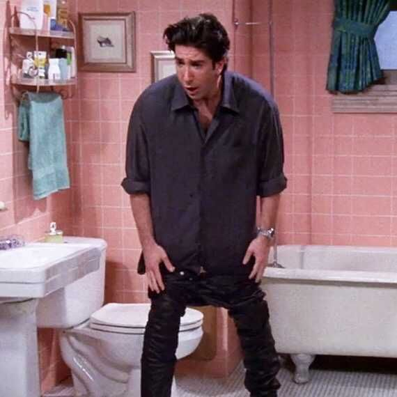
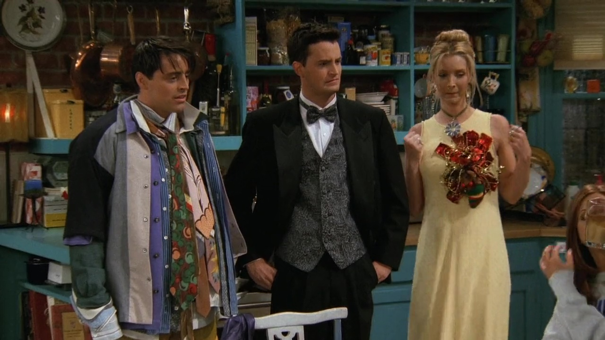
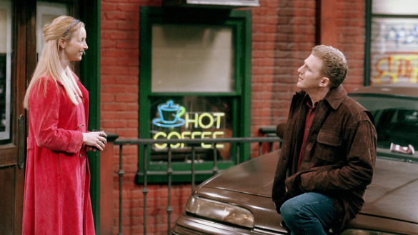
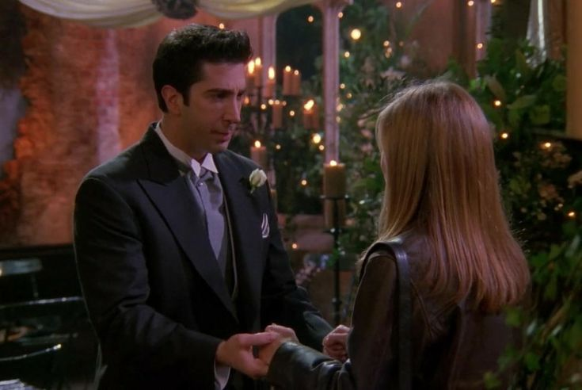

Iconic Scenes
Get ready to relive some of the most unforgettable moments from Friends—the show that captured our hearts, made us laugh until we cried, and somehow made us feel like part of the gang. From hilarious mishaps to touching moments of friendship, these iconic scenes have become a timeless part of pop culture. So, whether you're a die-hard fan or a first-time viewer, let's take a trip down memory lane and revisit the moments that made Friends... well, friends
The One With All The Resolutions
Season 5, Episode 11
Ross makes a New Year’s resolution to try something new every day—which leads him to buy a pair of tight leather pants for a date. But things go south (literally) when he gets hot and sweaty in the bathroom and cannot pull them back up. In a desperate attempt to fix the situation, he tries baby powder… then lotion… creating a gooey mess that leaves him stuck, panicked, and calling Joey for help.
The One Where No One Is Ready
Season 3, Episode 2
Ross is frantically trying to get everyone ready for an event, but chaos ensues. Joey wears all of Chandler’s clothes (“Could I be wearing any more clothes?”), and Monica obsesses over a voicemail her ex-Richard left. It is a masterclass in ensemble timing of one distraction after the next.
The One with the Cop
Season 5, Episode 16
The gang finds a couch on the street, and Ross convinces Rachel and Chandler to help carry it upstairs resulting in the legendary "PIVOT!" scene. It's one of the show's most quoted moments ever.
The One With Ross's Wedding
Season 4, Episode 23/24
While in London for Ross's wedding, Chandler and Monica unexpectedly sleep together, marking the beginning of one of the show’s most beloved relationships. Their chemistry, humor, and secrecy add an exciting twist to the group's dynamics—and fans could not get enough. Aren’t you glad Monica proposes to him in the end? Oh, and Ross says Rachel instead of Emily. Oops.